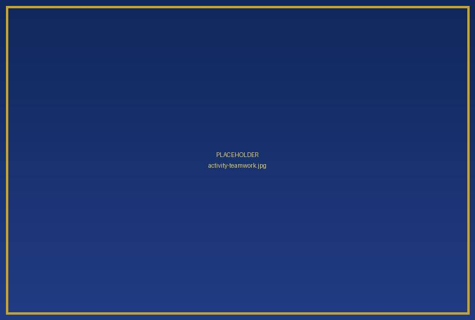
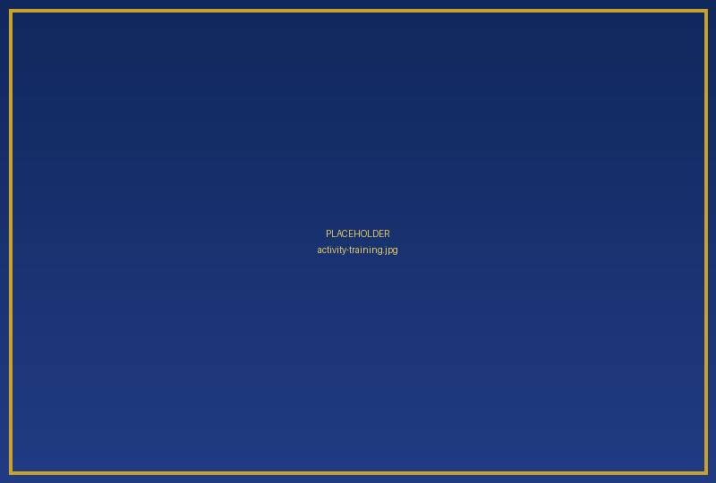
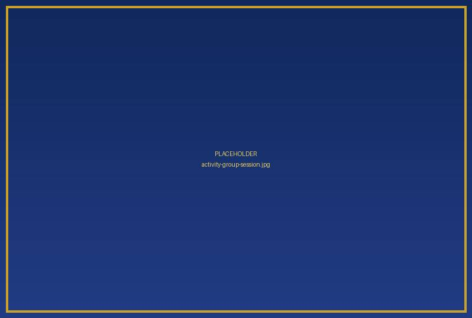
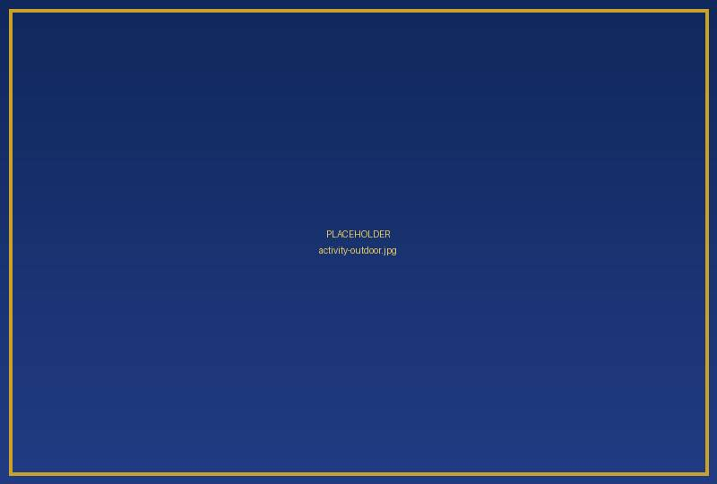

Our Programmes & Activities
Discover our structured programmes and camp activities designed to encourage discipline, teamwork, responsibility and positive character development.
Developing Discipline Through Structured Activities
At Mpumalanga Nkomazi Disciplinary Camp we provide an organised camp experience through structured training, group participation, physical activities and outdoor experiences. Participants are encouraged to build positive habits, respect others and understand the importance of working together.
Our Main Programmes

Teamwork & Unity
Building Stronger Connections Through Teamwork
Participants are encouraged to work together, support one another and understand the importance of cooperation. Through group participation and team-based activities, young people develop communication, collaboration and a sense of belonging.
Key focus areas- Teamwork and cooperation.
- Unity and togetherness.
- Communication and interaction.
- Respect for others.
- Group participation.
Discipline & Security
Promoting Discipline, Safety and Responsibility
Discipline and security are important parts of an organised camp. Participants are supervised and supported by the camp team, and are guided towards safe, responsible and respectful conduct throughout camp activities.
Key focus areas- Discipline and responsible behaviour.
- Professional supervision.
- Organised camp activities.
- Safety awareness.
- Respect for rules and instructions.

Structured Training
Building Physical Discipline and Responsibility
Structured training encourages participants to develop discipline, commitment and responsibility. Through organised physical activities and sessions, participants follow instructions, stay consistent and work towards shared objectives.
Key focus areas- Physical activities and participation.
- Discipline and commitment.
- Following instructions.
- Personal responsibility.
- Consistency and teamwork.
Camp Experience
Learning, Growing and Experiencing Camp Life
The camp experience gives young people the chance to take part in organised outdoor activities and shared group experiences, developing cooperation, confidence and positive relationships.
Key focus areas- Outdoor camp activities.
- Group participation.
- Community engagement.
- Teamwork and unity.
- Shared camp experiences.
Activities That Encourage Participation and Growth

Physical Training
Organised physical exercises and fitness activities.
Team-Building Activities
Activities encouraging cooperation and group participation.
Discipline and Responsibility
Structured sessions encouraging positive behaviour and accountability.
Outdoor Camp Activities
Organised outdoor experiences and shared camp activities.
Developing Positive Values for Life
Participation in structured activities creates opportunities for young people to develop important personal and social values.
Discipline
Understanding responsibility, commitment and self-control.
Teamwork
Learning to cooperate and work with others.
Respect
Developing respect for others and shared responsibilities.
Personal Growth
Encouraging confidence and positive development.

More Than Activities: A Shared Experience
Every camp experience brings opportunities to interact, work together and take part in structured activities. We aim to create an environment where young people learn from one another and develop positive relationships.
Explore Our GalleryFrequently Asked Questions
What programmes are offered at the camp?
The camp highlights teamwork and unity, discipline and security, structured training and outdoor camp experiences.
Who can participate?
Age requirements and eligibility criteria will be confirmed by the organisers.
How long can participants attend?
The advertised packages range from one week to three months. Availability and camp dates must be confirmed.
How can I register?
Contact the camp on 076 329 2437 or use the online registration page.
Ready to Experience the Camp?
Explore our programmes and take the next step towards an organised camp experience focused on discipline, teamwork and responsibility.
REGISTER NOWEnquiries: 076 329 2437